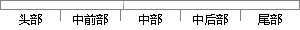

人们在实际生活中解决一个大而复杂的问题时，往往会把这个大问题分解成多个简单和容易解决的小问题。
片段位置图

相似结果
相似片段：人们在实际生活中处理一个大而复杂问题时,惯用的方法就是“分而治之”,即把一个大问题分解成多个相对简单、比较容易解决的小问题,小问题逐个被解决了,大问题也...
| 标题 | 《基于μCOS-Ⅱ多任务管理及PC机通信模块设计 - 硕士论文 - 道客巴巴》 |
| 对比库 | PaperRater云论文库 |
| 网址 | http://www.doc88.com/p-806819385790.html |
| 相似率 | 83.78% （严重抄袭） |
※ 片段修改建议 ※
近似词参考：- 复杂：庞大 繁杂
- 问题：题目
- 往往：常常 每每
- 解决：办理
- 容易：轻易
- 简单：简略 简朴
系统自动生成语句： 人们在实际生活中办理一个大而庞大的题目时，常常会把这个大题目分解成多个简略和轻易办理的小题目。
注：本片段修改建议为系统自动生成，仅供参考。